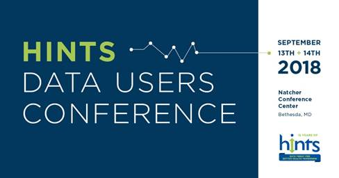

July 2018 Newsletter
Scientific Advances
Waterpipe smoking accounts for more than half of tobacco smoking among US young adults
Tobacco Control Research Branch (TCRB) grantee Brian Primack and colleagues used data from a nationally representative sample of young adults to compare the frequency and volume of waterpipe smoking (hookah) and cigarette smoking. They found that more than half of tobacco smoke volume consumed by the young adult population came from hookahs, signaling a need for public health and policy interventions that specifically address waterpipe smoking in addition to cigarette smoking.
Reference: Primack, B.A., Shensa, A., Sidani, J.E., Tulikangas, M.C., Roberts, M.S., Colditz, J.B., Mor, M.K., James, A.E., Fine, M.J. Comparison of toxicant load from waterpipe and cigarette tobacco smoking among young adults in the USA. (2018) Tob Control doi: 10.1136/tobaccocontrol-2017-054226. [Epub ahead of print]
ADOPT Core Measures Project featured in Obesity supplement
BRP staff contributed to a recent Obesity supplement about the Accumulating Data to Optimally Predict Obesity Treatment (ADOPT) Core Measures Project . This effort provides researchers with a set of weight control-related constructs and measures that integrate four domains -- behavioral, biological, environmental, and psychosocial. ADOPT researchers aim to inform more personalized and targeted treatments for adults with obesity.
. This effort provides researchers with a set of weight control-related constructs and measures that integrate four domains -- behavioral, biological, environmental, and psychosocial. ADOPT researchers aim to inform more personalized and targeted treatments for adults with obesity.
References: MacLean, P.S., Rothman, A.J., Nicastro, H.L., Czajkowski, S.M., Agurs-Collins, T., Rice, E.L., Courcoulas, A.P., Ryan, D.H., Bessesen, D.H., Loria, C.M. The Accumulating Data to Optimally Predict Obesity Treatment (ADOPT) Core Measures Project: Rationale and approach. (2018) Obesity doi: 10.1002/oby.22154.
Rosenbaum, M., Agurs-Collins, T., Bray, M.S., Hall, K.D., Hopkins, M., Laughlin, M., MacLean, P.S., Maruvada, P., Savage, C.R., Small, D.M., Stoeckel, L. Accumulating Data to Optimally Predict Obesity Treatment (ADOPT): Recommendations from the biological domain. (2018) Obesity doi: 10.1002/oby.22156.
Saelens, B.E., Arteaga, S.S., Berrigan, D., Ballard, R.M., Gorin, A.A., Powell-Wiley, T.M., Pratt, C., Reedy, J., Zenk, S.N. Accumulating Data to Optimally Predict Obesity Treatment (ADOPT) Core Measures: Environmental domain (2018) Obesity doi: 10.1002/oby.22159.
Sutin, A.R., Boutelle, K. Czajkowski, S.M., Epel, E.S., Green, P.A., Hunter, C.M., Rice, E.L., Williams, D.M., Young-Hyman, D., Rothman, A.J. Accumulating Data to Optimally Predict Obesity Treatment (ADOPT) Core Measures: Psychosocial domain (2018) Obesity doi: 10.1002/oby.22160.
Tobacco advertising receptivity associated with use
TCRB Program Director Annette Kaufman and colleagues used longitudinal data from the Population Assessment of Tobacco and Health (PATH) Study to examine whether receptivity to tobacco advertising among youth and young adults was associated with tobacco product use progression. Results showed that receptivity to conventional cigarettes, electronic cigarettes (e-cigarettes), cigars, and smokeless tobacco advertising was associated with progression toward use of the advertised product. E-cigarette advertising had the highest receptivity among all age groups and was independently associated with those in the youngest age group (12-21 years) having used a cigarette one year later. PATH is a nationally representative, longitudinal cohort study funded by the NIH and FDA that assesses tobacco use in the U.S.
Reference: Pierce, J.P., Sargent, J.D., Portnoy, D.B., White, M., Noble, M., Kealey, S., Borek, N., Carusi, C., Choi, K., Green, V.R., Kaufman, A.R., Leas, E., Lewis, M.J., Margolis, K.A., Messer, K., Shi, Y., Silveira, M.L., Snyder, K., Stanton, C.A., Tanski, S.E., Bansal-Travers, M., Trinidad, D., Hyland, A. Association between receptivity to tobacco advertising and progression to tobacco use in youth and young adults in the PATH study (2018). JAMA Pediatr doi: 10.1001/jamapediatrics.2017.5756. [Epub ahead of print]
Intensity or volume: What matters when getting physical activity?
Health Behaviors Research Branch (HBRB) Program Director David Berrigan and colleagues examined 2003-06 accelerometer data from the National Health and Nutrition Examination Survey (NHANES) to identify whether higher intensity levels of physical activity or a higher volume of physical activity resulted in greater health benefits. They found that light activity was significantly more beneficial for less active people and also identified the importance of moderate-to-vigorous activity to obtain maximal health benefits.
Reference: Saint-Maurice, P.F., Troiano, R.P., Berrigan, D., Kraus, W.E., Matthews, C.E. Volume of light versus moderate-to-vigorous physical activity: Similar benefits for all-cause mortality? (2018). J Am Heart Assoc. doi: 10.1161/JAHA.118.008815.
Review reveals complexities of team science
HBRB Program Director Kara Hall, fellow Elise Rice, and colleagues summarized the empirical findings from the Science of Team Science (SciTS) literature into central themes that address the value of team science, the formation and composition of teams, processes that impact team functioning, and institutional influences on team science. These complex scientific collaborations offer new research opportunities to advance the SciTS field.
Reference: Hall, K.L., Vogel, A.L., Huang, G.C., Serrano, K.J., Rice, E.L., Tsakraklides, S.P., Fiore, S.M. The science of team science: A review of the empirical evidence and research gaps on collaboration in science. (2018) Am Psychol. doi: 10.1037/amp0000319.
Indoor tanning bed users more likely to have skin exams for cancer
HBRB Program Director Frank Perna and fellow Kasey Morris, along with FDA colleague Markham Luke, examined HINTS data to assess the frequency of skin cancer exams among indoor tanning bed users. They found that people who engaged in indoor tanning behavior were more likely than nonusers to have checked their skin for signs of cancer and to have had a professional skin cancer examination.
Reference: Morris, K.L., Luke, M.C., Perna, F.M. Prevalence of skin cancer examination among users of indoor tanning beds. (2018) JAMA Dermatol. doi: 10.1001/jamadermatol.2018.1118. [Epub ahead of print]
Patient-provider communication about cancer-related genetic and genomic testing limited
Health Communication and Informatics Research Branch (HCIRB) staff and colleagues analyzed 24 reviews of communication issues in the context of cancer-related genetic and genomic testing (CGT) published between 2010-17. They found that knowledge and awareness about CGT was low, despite substantial public interest, and overall, there was limited communication about this topic between patients and providers. Providers reported insufficient knowledge and overall caution, particularly regarding direct-to-consumer genetic testing. Barriers existed at the individual, interpersonal, and systems levels, and there was little research related to minority and underserved populations.
Reference: Peterson, E.B., Chou, W.S., Gaysynsky, A., Krakow, M., Elrick, A., Khoury, M.J., Kaphingst, K.A. Communication of cancer-related genetic and genomic information: A landscape analysis of reviews (2018). Transl Behav Med. doi: 10.1093/tbm/ibx063.
Handbook of Health Behavior Change updated with chapter on technology
HCIRB Chief Brad Hesse and colleagues recently contributed a chapter to the fifth edition of the Handbook of Health Behavior Change. The textbook focuses on innovations in technology as they relate to health behavior change research and interventions. It also provides updated reviews that emphasize mobile health technologies and electronic health data capture and transmission.
Reference: Hesse, B. W., Beckjord, E., & Ahern, D. K. (2018). Role of technology in behavior change to expand reach and impact on public health. In M. E. Hilliard, K. A. Riekert, J. K. Ockene & L. Pbert (Eds.), Handbook of Behavior Change (Fifth ed., pp. 525-544). New York, NY: Springer Publishing Company.
Geospatial research conducted at NCI Cancer Centers, but gaps remain
BRP Program Directors David Berrigan and April Oh and colleagues recently reviewed the landscape of geospatial, contextual, and multilevel research conducted at NCI Cancer Centers over the past five decades. They analyzed 802 papers published between 1971 and 2016 and found that many cancer centers don’t conduct research in these areas. Over 90% of the papers they analyzed were published after 2000. Additionally, nearly half of the papers came from research conducted at five cancer centers, yet there are currently 70 centers. The research highlights the need to expand cancer-related geospatial research.
Reference: Korycinski, R.W., Tennant, B.L., Cawley, M.A., Bloodgood, B., Oh, A.Y., Berrigan, D. Geospatial approaches to cancer control and population sciences at the United States cancer centers (2018). Cancer Causes Control. doi: 10.1007/s10552-018-1009-0.
NIH seeks to capitalize on data science advances through strategic plan
NIH recently released its first Strategic Plan for Data Science. The plan provides a roadmap for modernizing the NIH-funded biomedical data science ecosystem and maximizing the value of data generated through NIH-funded efforts. The ultimate aim of these efforts is to accelerate the pace of biomedical discoveries and medical breakthroughs. The strategic plan incorporates input from the scientific community and the public. NIH will continue to seek input during the implementation phase over the course of the next year. Read the strategic plan »
In the News
Cancer Center Cessation Initiative featured in Cancer Today
The American Association for Cancer Research’s magazine Cancer Today recently featured TCRB Program Director Glen Morgan, discussing the $5.5 million Cancer Center Cessation Initiative he leads. The article highlights the importance of offering tobacco cessation services to patients with cancer. Learn more about the NCI Cancer Center Cessation Initiative »
recently featured TCRB Program Director Glen Morgan, discussing the $5.5 million Cancer Center Cessation Initiative he leads. The article highlights the importance of offering tobacco cessation services to patients with cancer. Learn more about the NCI Cancer Center Cessation Initiative »
HINTS data reveal gaps in public’s understanding of cancer screening
Reuters interviewed Cancer Prevention fellow Megan Roberts about her research on the public’s understanding of cancer screening. Using Health Information and National Trends Survey (HINTS) data, Dr. Roberts found gaps in the lay public’s understanding of cancer screening. Her article, titled Lay beliefs about the accuracy and value of cancer screening, was published in the American Journal of Preventive Medicine in May 2018.
interviewed Cancer Prevention fellow Megan Roberts about her research on the public’s understanding of cancer screening. Using Health Information and National Trends Survey (HINTS) data, Dr. Roberts found gaps in the lay public’s understanding of cancer screening. Her article, titled Lay beliefs about the accuracy and value of cancer screening, was published in the American Journal of Preventive Medicine in May 2018.
Team science recommendations featured in Nature Jobs
Nature Jobs recently interviewed HBRB’s Kara Hall about navigating the complex field of cancer and working in multi-disciplinary teams. An April article on collaboration in cancer research
recently interviewed HBRB’s Kara Hall about navigating the complex field of cancer and working in multi-disciplinary teams. An April article on collaboration in cancer research highlights Dr. Hall’s pioneering work in the Science of Team Science field and focuses on advice and insights for early-career investigators.
highlights Dr. Hall’s pioneering work in the Science of Team Science field and focuses on advice and insights for early-career investigators.
Creating healthy habits that stick
“NIH News in Health,” a monthly NIH newsletter, interviewed HBRB Branch Chief Susan Czajkowski about how to make healthy and lasting behavior changes. Dr. Czajkowski recommended setting realistic goals, tracking the desired behavior, and having patience. “Things may not go as planned, and that’s okay,” Czajkowski says. “Change is a process. What’s most important is to keep moving forward.”
Funding Opportunities
DCCPS contact: Michelle Mollica
Posted June 28, 2018
Expires August 17, 2018
BRP contact: Mary O’Connell
Posted June 29, 2018
Expires August 17, 2018
Mechanism for Time-Sensitive Drug Abuse Research (R21 Clinical Trial Optional) (PAR-18-064)
BRP contact: Kelly D. Blake
Posted November 8, 2017
Expires November 9, 2018
DCCPS contact: Shobha Srinivasan
Posted April 27, 2018
Expires September 20, 2018
BRP contacts: Kara Hall and Todd Horowitz
Posted March 2, 2018
Expires November 30, 2018
BRP contact: Rachel Grana Mayne
Posted June 29, 2018
Expires June 28, 2020
BRP contact: Rachel Grana Mayne
Posted June 29, 2018
Expires June 28, 2020
BRP contact: Annette Kaufman
Estimated publication date August 5, 2018
BRP contact: Annette Kaufman
Estimated publication date August 5, 2018
Recognitions
2018 Population Health Sciences Special Interest Group Trainee Award
At the Society for Behavioral Medicine’s annual conference, BRP Cancer Prevention Fellow Dannielle Kelley received the 2018 Population Health Sciences Special Interest Group Trainee Award for Outstanding Abstract Submission and the Citation Award for her paper titled, “Understanding the pro-tanning communication environment: Content analysis as a critical step towards message development.”
2018 American Psychosomatic Society Young Investigator Colloquium Award
Cancer Research Training Award Fellow Jennifer Guida was selected for the 2018 Young Investigator Colloquium at the American Psychosomatic Society meeting. Her grant is titled “Trajectories of Biological Aging and the Role of Social Isolation among Women with HIV.” Dr. Guida is a fellow in the Basic Biobehavioral and Psychological Sciences Branch where she researches how biological pathways of psychosocial effects impact quality of life for cancer survivors.
Career and Training Opportunities
FEDERAL POSITION: Program Director, Behavioral Research Program
NCI invites letters of interest from scientists interested in behavioral risk factors for cancer to join the Behavioral Research Program as a Scientific Program Director. Read the position description »
FELLOWSHIP: Health Behaviors Research Branch
The program invites applications from qualified candidates for a full-time fellowship position in innovative, interdisciplinary health behavior research. Read the position description »
FELLOWSHIP: Cancer Prevention Fellowship
The Cancer Prevention Fellowship is a comprehensive, multidisciplinary postdoctoral program offering various research opportunities for future leaders in cancer prevention and control. The application deadline is August 25, 2018. Read about the fellowship » Current Cancer Prevention Fellows in BRP include Erin Ellis, Jarrett Johnson, Anne Julian, Dannielle Kelley, Melinda Krakow, Lilian Perez, Megan Roberts, Calvin Tribby, Christopher Wheldon, and Kara Wiseman.
FELLOWSHIP: Behavioral Research Program
The program invites applications from post-doctoral candidates with interest and expertise in dyadic relationships and social processes. Read the position description »
Resources
Annual Report to the Nation on the Status of Cancer
The 2018 Annual Report to the Nation on the Status of Cancer finds that overall cancer death rates continue to decline in men, women, and children in the U.S. in all major racial and ethnic groups. Overall cancer incidence decreased in men and was stable in women from 1999 to 2014. In a companion study, researchers reported that there has been an increase in incidence of late-stage prostate cancer and that after decades of decline, prostate cancer mortality has stabilized. The annual report is a collaborative effort among researchers from NCI, the Centers for Disease Control and Prevention, the American Cancer Society, and the North American Association of Central Cancer Registries. View the report »
Surveillance, Epidemiology, and End Results (SEER) Cancer Statistics Review now available
NCI’s SEER Cancer Statistics Review offers data from 18 SEER population-based registries that cover 30% of the U.S. population. The report includes the most recent cancer incidence, mortality, survival, prevalence, and lifetime risk statistics from 1975-2015. Access the SEER CSR »
Panel report from NIH Pathways to Prevention obesity workshop now available
An unbiased, independent panel developed a final report of the 2017 NIH Pathways to Prevention Workshop: Methods for Evaluating Natural Experiments in Obesity. This report incorporates an assessment of the workshop’s systematic review of the scientific evidence, expert presentations, audience input, and public comment. It also identifies future research priorities. Read the report and other workshop resources and view the archived videocast »
NCCOR updates the Catalogue of Surveillance Systems
The National Collaborative on Childhood Obesity Research (NCCOR) recently updated the Catalogue of Surveillance Systems  — a free, online tool that provides one-stop access to publicly available data sources relevant to childhood obesity research. NCCOR is also seeking recommendations for new surveillance systems to be considered for inclusion in the catalogue. Submit recommendations and learn more »
— a free, online tool that provides one-stop access to publicly available data sources relevant to childhood obesity research. NCCOR is also seeking recommendations for new surveillance systems to be considered for inclusion in the catalogue. Submit recommendations and learn more »
Tobacco monograph on Economics of Tobacco available in six languages
The executive summary of Monograph 21: The Economics of Tobacco and Tobacco Control is now available in English, French, Spanish, Arabic, Chinese, and Russian. The monograph is a collaboration between NCI and the World Health Organization. It examines the current research and evidence base related to the economics of tobacco control — including tobacco use, tobacco growing, manufacturing and trade, tobacco product taxes and prices, and tobacco control policies and other interventions to reduce tobacco use and its consequences. Read the executive summary »
Events
July 18, 2018: Applications due for NCI-CRUK Sandpit Workshop
BRP is collaborating with Cancer Research UK (CRUK) to host a “Sandpit” workshop (i.e., ideas lab) October 28-31, 2018, in Potomac, Maryland. The workshop will focus on the contextual factors (e.g., social, cultural, and organizational) that influence the use of digital health interventions for cancer prevention. Early- and mid-career professionals based in the U.S. or U.K. who are interested in contributing their expertise and novel thinking to generate transformative ideas are especially encouraged to apply. All application materials must be emailed to Sandpit_Workshop@mail.nih.gov by July 18, 2018, at 5 p.m. EDT / 10 p.m. BST.
September 13-14, 2018: Health Information National Trends Survey (HINTS) Data Users Conference
 Register to attend NCI’s fifth HINTS Data Users Conference on September 13-14 at the Natcher Conference Center in Bethesda, Maryland. Since its launch in 2003, the HINTS program has been tracking changes in the rapidly evolving health communication and information technology landscape. It also is collecting data about the public’s knowledge of, attitudes toward, and use of cancer- and health-related information in order to advance the knowledge base on health communication and inform intervention planning. The meeting is free, and registration will be open until September 12 or until maximum attendance capacity is reached. Learn more and register »
on September 13-14 at the Natcher Conference Center in Bethesda, Maryland. Since its launch in 2003, the HINTS program has been tracking changes in the rapidly evolving health communication and information technology landscape. It also is collecting data about the public’s knowledge of, attitudes toward, and use of cancer- and health-related information in order to advance the knowledge base on health communication and inform intervention planning. The meeting is free, and registration will be open until September 12 or until maximum attendance capacity is reached. Learn more and register »